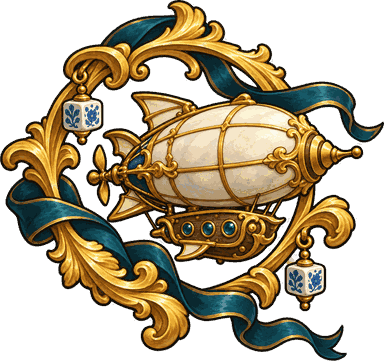

Fart, fag og forgylte farkostar
Fykefuga
Fyk gjennom barokksalen. Vel vegen med rett svar.
Bragdane dine
Gjer deg klar
Styr med mellomrom eller berøring.

Fart, fag og forgylte farkostar
Fyk gjennom barokksalen. Vel vegen med rett svar.
Gjer deg klar
Styr med mellomrom eller berøring.